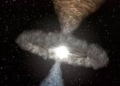
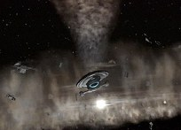
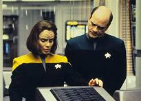
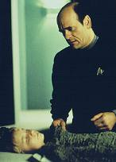
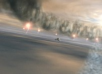

|
MANCHETE
DO EPISDIO
Doutor descobre as dores de ter uma famlia
Episdio
anterior | Prximo
episdio
Sinopse:
Data Estelar: 50863.2.
 Quando a Voyager se depara com um vasto campo de destroos, a
tripulao conclui que isso tudo o que resta de uma estao
espacial aliengena para a qual estavam indo. Ao encontrar uma
estranha trilha de partculas de plasma no local, a nave altera seu
curso para solucionar o mistrio acerca do que aconteceu com a estao.
Enquanto isso, em um esforo para expandir os horizontes de
seu programa, o Doutor cria uma famlia hologrfica
"perfeita": uma esposa chamada Charlene, o filho
adolescente Jeffrey, e uma filha de dez anos de idade chamada Belle.
Depois que o mdico convida Kes e Torres para jantar com seus
"familiares", a tenente o avisa que aquilo no uma viso
precisa da vida familiar e oferece ajuda para tornar o cenrio mais
realstico.
 medida que a Voyager segue a trilha de partculas, um fenmeno
semelhante a um tornado emerge do subespao e a atinge. A nave
consegue escapar da anomalia relativamente intacta e Chakotay sugere
que da prxima vez que aquilo acontecer, eles tentem capturar
algumas das partculas altamente carregadas. No holodeck, as alteraes
de Torres no agradam o Doutor; sua esposa agora trabalha, sua
filha reclama o tempo todo e o filho se envolve com Klingons
violentos. medida que a Voyager segue a trilha de partculas, um fenmeno
semelhante a um tornado emerge do subespao e a atinge. A nave
consegue escapar da anomalia relativamente intacta e Chakotay sugere
que da prxima vez que aquilo acontecer, eles tentem capturar
algumas das partculas altamente carregadas. No holodeck, as alteraes
de Torres no agradam o Doutor; sua esposa agora trabalha, sua
filha reclama o tempo todo e o filho se envolve com Klingons
violentos.
Paris sugere que levar uma nave auxiliar at o centro do fenmeno
pode ser a melhor oportunidade de capturar as valiosas partculas
de plasma. Quando a anomalia entra em erupo novamente, ele tenta
a manobra e acaba sendo pego de surpresa por um segundo tornado. A
tripulao assiste assustada Paris desaparecer.
O Doutor tenta resolver a complicada situao com o filho. A
conversa se transforma em uma discusso que acaba interrompida pela
notcia de que Belle foi seriamente ferida em um acidente.
Percebendo que a filha est para morrer, ele abruptamente
interrompe o programa do holodeck.
 Paris descobre que est preso entre o espao e o subespao,
e conclui que a nica forma de sair de l a mesma pela qual
entrou: dentro de um tornado. Quando uma enorme tempestade surge no
espao normal, a Voyager consegue transport-lo a bordo. Na
Enfermaria, Paris convence o Doutor a retornar ao holodeck e encarar
a dor que a vida inevitavelmente traz. O mdico ento reativa seu
programa e permite-se experimentar o sofrimento da perda e o consolo
que vem da unio que a tragdia trouxe ao resto da famlia.
Comentrios:
Como de praxe em Voyager, a
histria da semana se sustenta em duas tramas paralelas, uma delas
trabalhando o lado psicolgico de um personagem, e a outra, o
fenmeno espacial da semana.
Apesar da frmula batida, "Real Life" ,
sem dvida nenhuma, um dos pontos altos do terceiro ano, e o
sucesso do roteiro pode ser atribudo atuao sempre
impecvel de Robert Picardo, no papel do complexo mdico
hologrfico da nave.
 irnico que durante os primeiros
episdios da srie o Doutor fosse o personagem menos explorado e
mais subestimado pelos roteiristas, constantemente deixado de lado
sem nada para fazer, e agora passe a ser o centro das
atenes e um dos tripulantes mais amados da nave. Parece
que os produtores resolveram assumir alguns riscos - atitude
surpreendente, diga-se de passagem - e tentaram inserir o
telespectador no universo particular do Doutor. Aqui, o EMH no se
parece em nada com Data, de A Nova Gerao, a inteligncia
artificial perfeita em suas aes (em quem os criadores de Voyager
se basearam para desenvolv-lo). Pelo contrrio, o personagem
de Picardo conflitante, irregular, s vezes contraditrio;
humano. Novamente, o f atento no deixa de perceber a ironia da
situao: o mdico-chefe, mero exemplar de tecnologia do sculo
24, o personagem mais humano e carismtico da srie! irnico que durante os primeiros
episdios da srie o Doutor fosse o personagem menos explorado e
mais subestimado pelos roteiristas, constantemente deixado de lado
sem nada para fazer, e agora passe a ser o centro das
atenes e um dos tripulantes mais amados da nave. Parece
que os produtores resolveram assumir alguns riscos - atitude
surpreendente, diga-se de passagem - e tentaram inserir o
telespectador no universo particular do Doutor. Aqui, o EMH no se
parece em nada com Data, de A Nova Gerao, a inteligncia
artificial perfeita em suas aes (em quem os criadores de Voyager
se basearam para desenvolv-lo). Pelo contrrio, o personagem
de Picardo conflitante, irregular, s vezes contraditrio;
humano. Novamente, o f atento no deixa de perceber a ironia da
situao: o mdico-chefe, mero exemplar de tecnologia do sculo
24, o personagem mais humano e carismtico da srie!
A princpio, o que mais chama a
ateno na histria o fato de o Doc ter finalmente adotado um
nome para si. No holodeck, sua famlia hologrfica o trata por
"Kenneth". Mas, "como alegria de pobre dura
pouco", ele volta ao velho "EHM" ao final do
episdio - e pelo mesmo motivo que o fez em "Heroes
and Demons", da primeira temporada. A dor da perda de
algum com quem se importava o dissuadiu de usar um nome
definitivo.
 A famlia irritantemente funcional
outro ponto que chama a ateno. Apesar de dramtico, o
roteiro abre espao para o humor, que a grande caracterstica
de Picardo. S que a comicidade da situao s vezes superada
pela abordagem muito ingnua do tema. Sendo uma enciclopdia
ambulante, programada com mais de 5 milhes de referncias
mdicas (incluindo contedo sobre psicologia), e convivendo h 3
anos entre 150 pessoas de raas diferentes, como que o Doutor
poderia acreditar que a famlia que ele criou era um retrato fiel
da realidade? Ser que era mesmo necessrio que a explosiva B'Elanna
Torres lhe desse uma indicao do que verossimilhana? em
momentos como esse que o Doc mais se assemelha a uma criana do que
a um mdico experiente.
Em todo caso, a participao de
Torres na histria foi interessante. Por experincia prpria de
vida, a engenheira sente-se quase insultada quando conhece a sra.
Kenneth e cia., aps um convite do Doc. E deveria sentir-se mesmo.
Abandonada pelo pai aos 5 anos e com contas a acertar com a me,
uma Klingon de temperamento difcil, certamente no era tarefa
fcil engolir o "bando de pirulitos perfeitos". A parte
interessante aparece nas escolhas de Torres na hora de re-programar
a famlia do Doutor. Ela leva a situao de um extremo ao outro.
A esposa se transforma numa me ausente e neurtica, a filha no
passa de uma garotinha mimada e irritante, e o filho, um adolescente
revoltado e cercado por ms companhias.
 Curioso
tambm o modo como o mdico tenta resolver as novas crises
domsticas que vieram com a famlia modificada. Ele tcnico e
terico at a ltima gota. Tenta ingenuamente acertar os
problemas estabelecendo regras e rotinas para cada um dos
familiares. S que ele no antecipa as respostas que decorrem
disso e tem dificuldade em compreender as reaes sua volta. A
esposa o repreende na frente das crianas e o filho o deixa falando
sozinho. A resposta inesperada vem da filha, a garotinha mimada. Ela
a nica que compreende as intenes de Kenneth.
Enquanto o drama familiar se agrava
no holodeck, o resto da tripulao se mantm ocupado com uma
anomalia sem nome ou classificao. A USS Voyager deve ter
quebrado todos os recordes da Frota, no que diz respeito a
fenmenos espaciais. Aparentemente, o quadrante Delta tem mais
atividade csmica do que qualquer outra regio da galxia.
 Tom
Paris se aventura em um tipo de universo paralelo e apresenta ao
telespectador o "melhor" tipo de tecnobaboseira que
existe. O que fica mal explicado nessa histria como a sonda
continua enviando dados Voyager depois de sumir dos sensores e,
da mesma forma, como Tom Paris consegue estabelecer contato daquela
outra dimenso. Mas como fica muito claro que essa trama
secundria serve apenas para ambientar a problemtica em torno do
Doc, ela no merece tanto espao nos comentrios.
 O
clmax do episdio com certeza a cena em que a filha do Doutor
se acidenta no holodeck, e ele perde o controle e desativa o
programa. Esse momento um dos mais profundos da srie. Merece
destaque a cena que se segue, com o mdico e Tom Paris na
Enfermaria. Os papis se invertem. Paris, o incorrigvel, depois
de levar um hilrio sermo do Doc, transmite a sabedoria, a
sensatez e a moral da histria. Mas ele no o faz de uma forma
piegas. Ele muito convincente e acaba convencendo o EMH a
testemunhar a morte de sua filha, como parte da experincia
familiar. S um parnteses: lindo quando Paris fala que as
circunstncias que aprisionaram a Voyager no quadrante Delta
aproximaram todos a bordo e os transformaram numa famlia, e que os
tripulantes se apiam uns nos outros para contornar a dor do
isolamento. isso que os fs sempre quiseram, mas sabe-se que, de
fato, no foi o que aconteceu. O
clmax do episdio com certeza a cena em que a filha do Doutor
se acidenta no holodeck, e ele perde o controle e desativa o
programa. Esse momento um dos mais profundos da srie. Merece
destaque a cena que se segue, com o mdico e Tom Paris na
Enfermaria. Os papis se invertem. Paris, o incorrigvel, depois
de levar um hilrio sermo do Doc, transmite a sabedoria, a
sensatez e a moral da histria. Mas ele no o faz de uma forma
piegas. Ele muito convincente e acaba convencendo o EMH a
testemunhar a morte de sua filha, como parte da experincia
familiar. S um parnteses: lindo quando Paris fala que as
circunstncias que aprisionaram a Voyager no quadrante Delta
aproximaram todos a bordo e os transformaram numa famlia, e que os
tripulantes se apiam uns nos outros para contornar a dor do
isolamento. isso que os fs sempre quiseram, mas sabe-se que, de
fato, no foi o que aconteceu.
Com pontos altos e baixos - como em
todo episdio -. "Real Life" um vencedor e s
vem para reafirmar o potencial do EMH e o talento de Picardo.
Citaes:
B'Elanna - "You're not going
to learn anything from being with these lollipops."
("Voc no vai aprender nada estando com esses
pirulitos.")
Doutor - "You're in fine
physical shape, Lieutenant. You may go ahead and engage in this
reckless activity."
("Voc est em boa forma fsica, tenente. Pode ir em frente
e se meter nessa atividade imprudende.")
Trivia:
 Kate
Mulgrew protestou junto aos produtores sobre este episdio. Ela
achava que havia mais a explorar no relacionamento de Janeway com
sua tripulao. "Eu gostaria de v-la em suas relaes com
sua tripulao. Pessoas reais. por isso que fui to enftica
ao protestar contra o episdio do Doutor, 'Real Life' -- por
que o Doutor, que era um holograma, deveria ser o nico a explorar
relacionamentos?"
Kate
Mulgrew protestou junto aos produtores sobre este episdio. Ela
achava que havia mais a explorar no relacionamento de Janeway com
sua tripulao. "Eu gostaria de v-la em suas relaes com
sua tripulao. Pessoas reais. por isso que fui to enftica
ao protestar contra o episdio do Doutor, 'Real Life' -- por
que o Doutor, que era um holograma, deveria ser o nico a explorar
relacionamentos?"
Este mais um episdio de mal-funcionamento no holodeck. O Doutor
cria para si uma esposa e dois filhos, mas quando os problemas comeam
a aparecer, adivinha de quem a culpa?
Linsdey Haun j havia aparecido
em Voyager, como a personagem hologrfica Beatrice Burleigh
de "Learning Curve" e "Persistence
of Vision", da primeira e segunda temporadas,
respectivamente.
Ficha
tcnica:
Dirigido por Anson Williams
Histria de Harry Doc Kloor
Roteiro de Jeri Taylor
Exibido em 23/04/1997
Produo: 064
Elenco:
Kate Mulgrew como
Kathryn Janeway
Robert Beltran como Chakotay
Roxann Biggs-Dawson como B'Elanna Torres
Robert Duncan McNeill como Tom Paris
Jennifer Lien como Kes
Ethan Phillips como Neelix
Robert Picardo como Doutor
Tim Russ como Tuvok
Garrett Wang como Harry Kim
Elenco convidado:
Wendy Schaal como Charlene
Glenn Walker Harris, Jr. como Jeffrey
Linsdey Haun como Belle
Stephen Ralston como Larg
Chad Haywood como K'Kath
Episdio
anterior | Prximo
episdio
|